Atlas Platform · Integrations
Procore Integration
Streamline construction operations with Procore and iottag. The integration enhances construction project management by bringing real-time asset tracking, fleet management and predictive maintenance directly into your Procore environment — improving resource allocation, boosting productivity and ensuring safety compliance effortlessly.
Key Features
Real-Time Intelligence Inside Procore
Real-Time Asset Tracking
What it does
Monitor live locations of equipment and personnel on Procore's project dashboards.
How it helps
Ensure assets are in the right place, reducing delays and improving efficiency.
Utilisation Monitoring
What it does
Track asset usage metrics within Procore.
How it helps
Identify underutilised equipment to reduce costs and optimise schedules.
Driver Behaviour Analysis
What it does
Track fleet movement and analyse driver habits.
How it helps
Improve safety and reduce operational risks on job sites.
Predictive Maintenance
What it does
Automate maintenance alerts based on telematics data.
How it helps
Prevent downtime and ensure equipment readiness.
Carbon Emissions Tracking
What it does
Provide detailed emissions data for compliance reporting.
How it helps
Meet sustainability goals without added complexity.
Benefits Of The Integration
Centralised Operations
Manage resources and analytics within Procore's interface.
Enhanced Safety
Real-time personnel tracking minimises risks on active sites.
Data-Driven Decisions
Leverage iottag's insights for smarter resource allocation.
Getting Started
Up And Running In Three Steps
Install The iottag App
- Go to the Procore App Marketplace.
- Search for “IOTTAG” and click Install Now.
- Follow the installation guide provided.
Connect Your iottag Account
- Log in to your Procore and iottag accounts.
- Sync projects and assets between the two platforms.
Customise Features
- Configure tracking, fleet management and maintenance workflows to suit your project's needs.
Basic System User Flow
From Login To Live Tracking
Authenticate Your Procore Account
- Log in with the account provided by iottag's admin.
- Link your Procore account by following the simple prompts.
- After successfully linking, you'll be redirected to the Home Page, where you can begin managing your equipment.
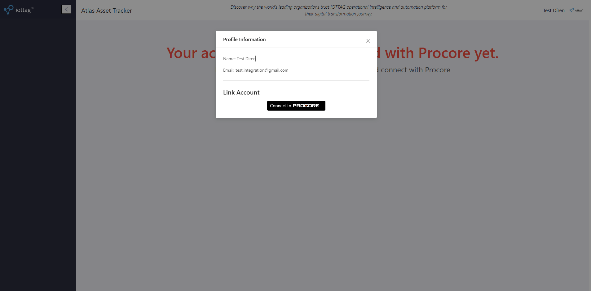
Attach An Atlas Tag To Procore Equipment
- Ensure your company has at least one piece of equipment on the Procore platform and an unattached tag or GPS in Atlas.
- Navigate to the Equipment Management page, select the equipment, click Attach and choose the relevant tag.
- Once attached, track the equipment's location in real time on the Outdoor Map page.
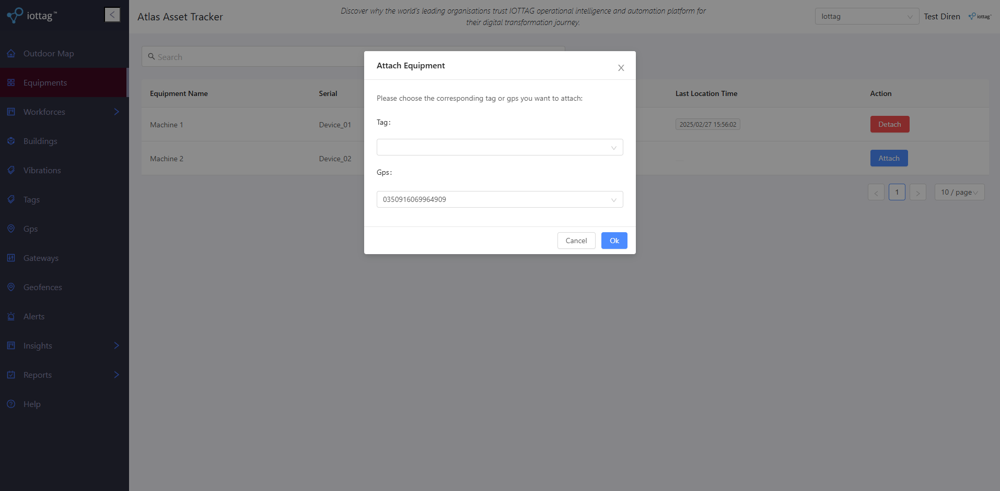
Create Alerts To Manage Equipment Location
- Ensure at least one gateway has been created in the Atlas platform.
- Navigate to the Alert Management page, click Create, then select the corresponding equipment, gateway or geofence.
- Set your alert parameters and receive a notification when the trigger condition is met.
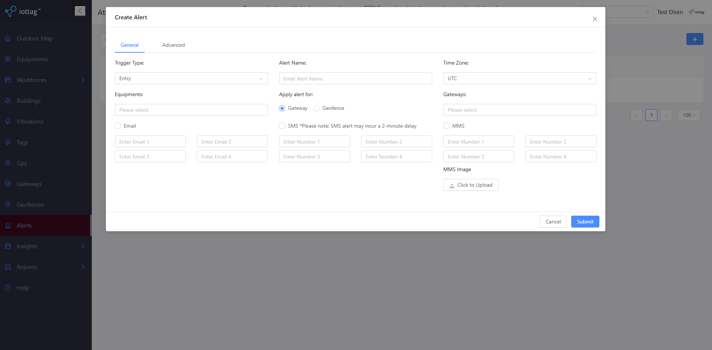
User Guide
Everything The Integration Can Do
A feature-by-feature guide to the iottag app inside Procore.
Get an overview of equipment locations on the map and see the exact location of each device. The sidebar shows the equipment list with a search bar, and status markers indicate whether each item has reported its location, is awaiting an update, or has not yet been assigned.
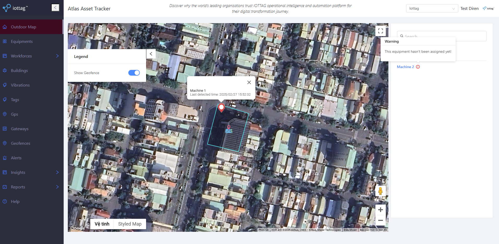
Display the equipment list with current status, and attach or detach tags in a couple of clicks. The table shows each item's name, serial, linked type (BLE or GPS), attachment status and last location time. Click Attach on unassigned equipment and choose a tag, or Detach to release one.
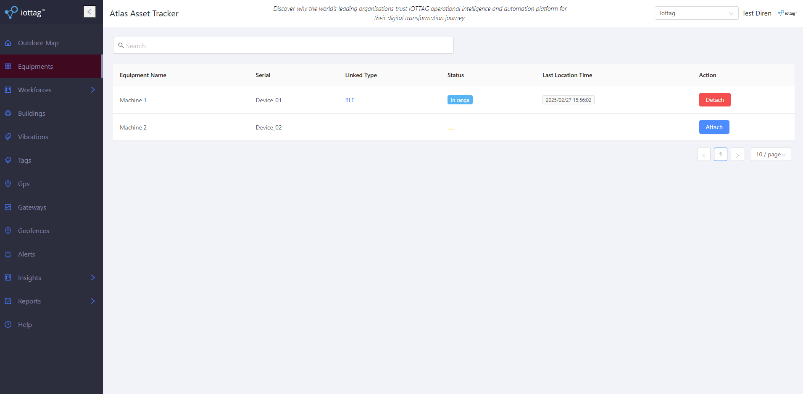
View gateway status at a glance — name, MAC address, indoor/outdoor type, connection state, network (PoE, WiFi or 4G) and last connection time. Edit a gateway to update its name, location on the map, offline-notification email and advanced status/offline intervals, or open its history to review past connections.
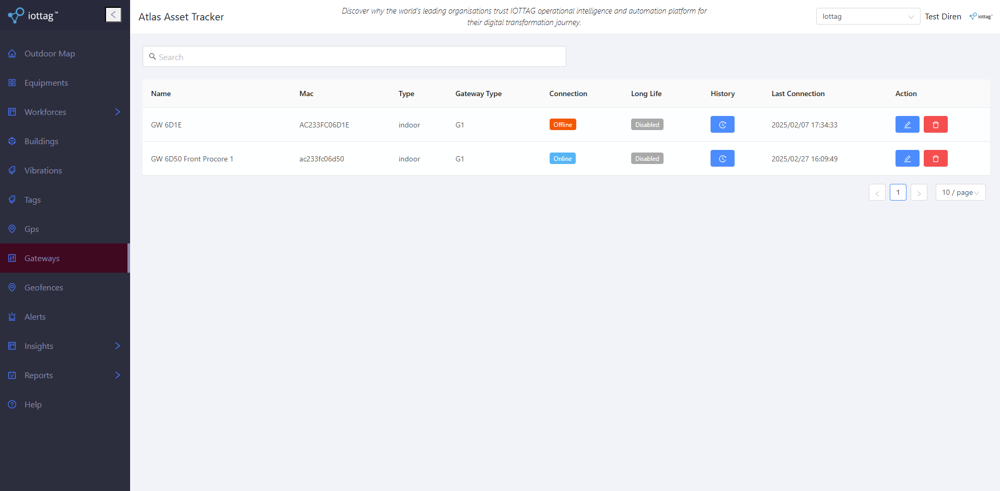
Create, update and delete alerts for your equipment. Choose an Entry or Exit trigger — fired when selected devices come within, or leave, the coverage area of chosen gateways or geofences — set the time zone, pick the equipment to include, and deliver notifications by email, SMS or MMS (with an optional image).
View the movement history of any attached equipment. Select the equipment and a date range — one of four presets or a fully custom period — to replay where it has been.
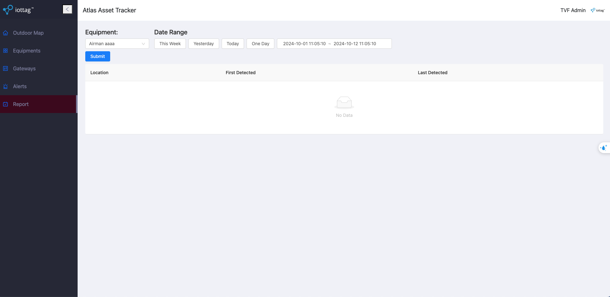
Check the presence of devices within a specified time range, filter by status or search by name, and export the result list to a CSV file for easy record-keeping and analysis.
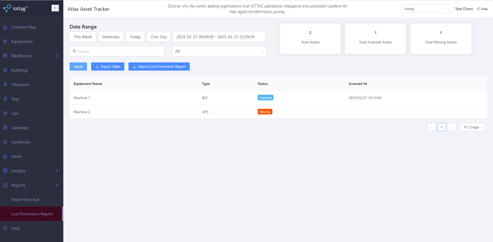
Check running time, idle time and off time for your equipment over any date range, and choose which equipment to display on the chart.
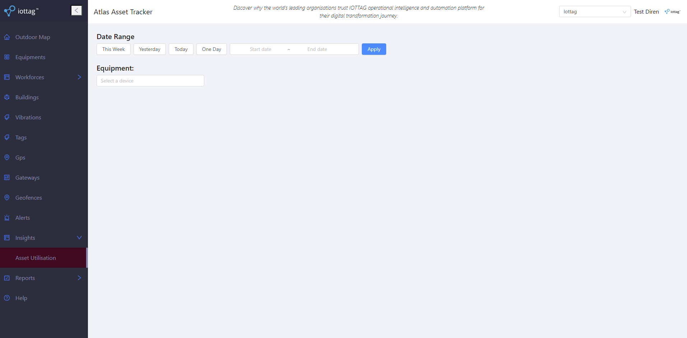
Create named geofences to display on the Outdoor Map or use in alerts. Draw them on the map as a polygon, rectangle or circle, remove specific shapes, and use the built-in location search to find the right spot faster.
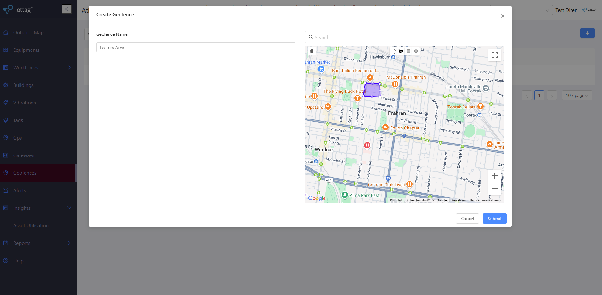
Manage the tag list, set per-axis vibration thresholds (X, Y, Z) with the data-point counts that mark a device Active or Inactive, and define the operational hours before maintenance is due. Review maintenance history and confirm completed maintenance with a date and time.
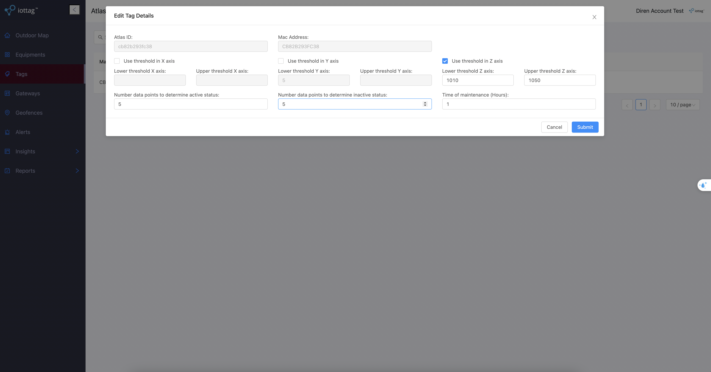
Pricing
Plans That Scale With Your Project
Note: hardware pricing is calculated based on your project's specific needs. Discounts available for larger deployments.
Support & Resources
Phone
+61 3 7046 7257Atlas Online Portal
atlas.iottag.com.auOther Integrations
Autodesk
Manage assets, monitor operations and improve decision-making inside Autodesk Construction Cloud.
Explore arrow_forwardServiceNow
Track and audit assets directly within ServiceNow with the Asset Tracking & Insights app.
Explore arrow_forwardSAP
Streamline operations, fleet performance and emissions reporting with SAP.
Explore arrow_forwardAPI Connect
Build your own integration on the Atlas API with flexible, scalable plans.
Explore arrow_forward
Streamline Your Construction Operations.
Take the next step with iottag and Procore — connect your projects and unlock real-time operational intelligence.